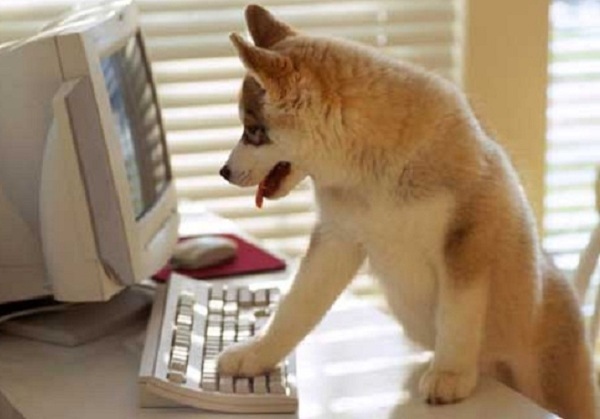
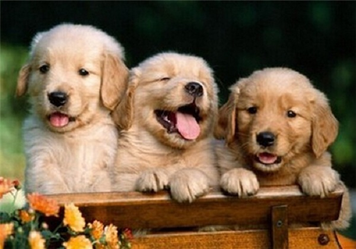
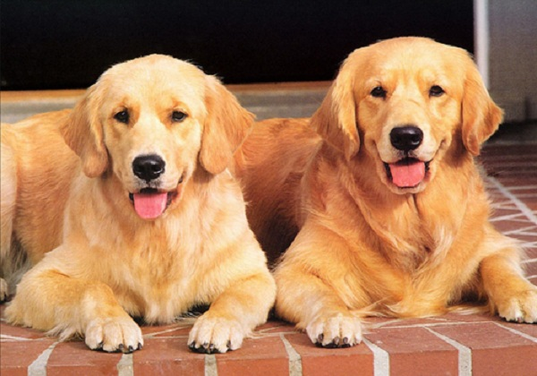

博客
-
- 
-
常看到一个名词 AKC是什么?
AKC是美国养犬俱乐部的缩写，AKC=American Kennel Club=美国犬舍俱乐部,AKC是致力于纯种犬事业的非营利组织，成立于1884年，由美国各地530多个独立的养犬俱乐部组成。
AKC是致力于纯种犬事业的非营利组织，成立于1884年，由美国各地530多个独立的养犬俱乐部组成。此外，约有3800个附属俱乐部参与AKC的活动，使用AKC的章程来开展犬展览，执行有关事项，教育计划，举办培训班和健康诊所。
1997年全美有经AKC批准举行的活动15738项，其中包括3289项爱犬展览，2561次服从及追踪训练和3305次表演活动。每一分钟选出一名代 表行使其代表决权，但是只有犬俱乐部才可以成为AKC会员。这些代表组成AKC的立法主体，他们制订活动的规则，选举出21位董事。董事负责管理AKC， 推举AKC官员并且根据代表确定的原则制订政策和规则。
AKC机构分为位于纽约总部和在北卡罗钠州首府的策划执行部。所有登记注册职能由北卡罗钠州管 理。AKC每年记录130多万只犬的亲代情况，但部参与犬的买卖,因而不能保证注册犬的健康和品种质量。一些雇员包括AKC地方代表和养犬监察员从事室外 工作，定期返回总部向其所在部门主管汇报工作。
讨论
-
- 
-
AFC是什么？
金毛是一种非常好的巡回猎犬，所以有的人就会用它参加狩猎比赛。
狩猎比赛为了检测参赛犬猝猎能力。已在AKC注册登记过、 6 月龄以上 的指示犬、寻回猎犬、猫、小猎兔犬、巴塞特猎犬和腊肠犬。波音达犬 , 寻回 猎犬、猫以及 ILP 成员都可以参加猝猎比赛。
在狩猎比赛中 , 参赛犬的能力如何是通过制定好的标准规则来衡量的。
在一系列赛事中成绩合格者可以分别获得初级猎犬 (junior JH) 、高级猎犬 (seMor SH) 、超级猎犬 (master MH) 的称号。参赛犬必须有较好的技巧才能 获得这些称号。
在野外狩猎比赛中,参加者相互角逐 ,竞争得分,来争夺冠军。比赛中的获胜者可以获得野外狩猎(Field Championship FC) 或业余组野外狩猎冠军 (Amateur Field championship AFC) 的称号
讨论
-
- 
-
什么是赛级金毛？赛级金毛与宠物级金毛有何区别？
首先严格来说,只有有官方血统证书的犬才有资格叫纯种犬，然后在纯种的基础上才分赛级和宠物级。同时赛级也分两种：够参加比赛的,还是能拿冠军的CHAMPION级。在国外赛级的概念就是冠军犬，但是在国内,可以参加比赛的金毛一律叫赛级金毛。
同时真正好的赛级金毛是可遇不可求的，因为就算父母都是有冠军头衔的,生出的金毛小狗中也只有25%的机会出现冠军犬。
赛级金毛外观标准：匀称，强壮，活泼，叫声洪亮悦耳，腿既不过长也不显笨拙，表现友善，有警觉，热切，自信的素质。作为猎犬，首要的是它能适应艰苦的环境。整体外观，平衡，步态都是重要的考察部分。
讨论